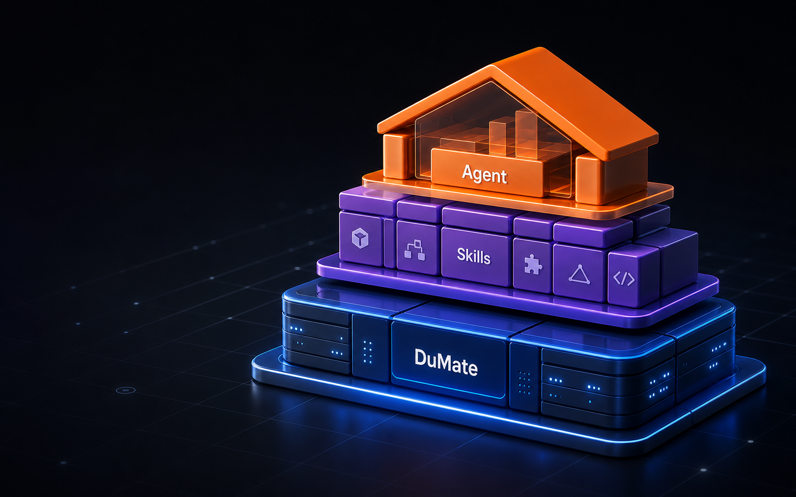
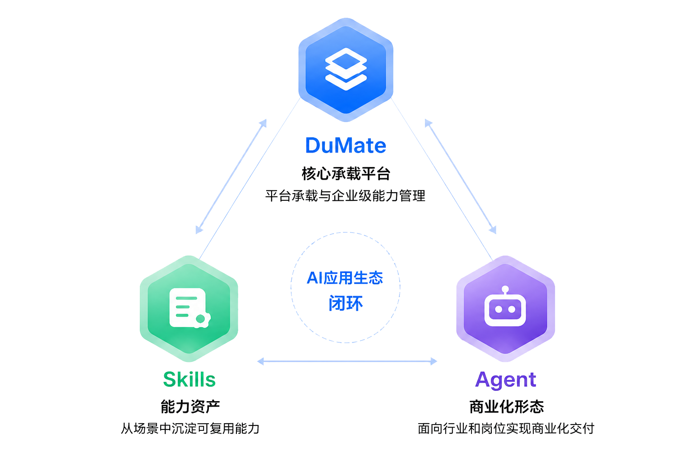
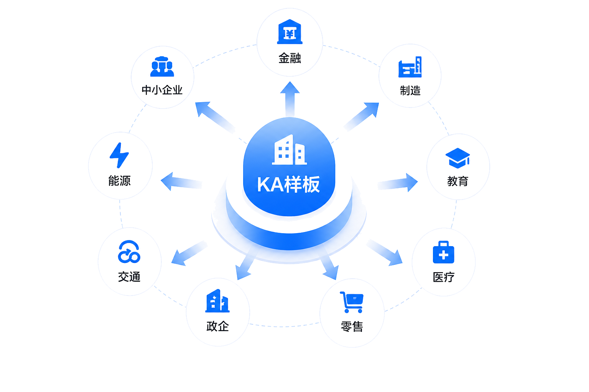

围绕客户真实业务链路拆解问题，包括增长、履约、内容、风控、客服、运营与知识管理。
AI Native Solution Center
泛科技解决方案中心
泛科技团队把客户场景拆解为可复用 Skills，再通过 DuMate 完成知识、工具、流程和权限治理，最终封装成可交付、可评估、可复制的行业 Agent。

- DuMate
- 承载知识库、工作流、工具调用、权限审计与多渠道发布
- Skills
- 沉淀客户业务标签、行业能力、流程组件与交付模板
- Agent
- 面向岗位、流程和行业场景，执行任务并反馈业务结果
Positioning
从“客户需求”到“能力资产”的
中台化沉淀
泛科技客户共性强：高频业务、数据密集、场景多变、系统复杂。解决方案中心的目标不是做一次性 Demo，而是把行业 Know-how 转为可检索、可组合、可评估的 AI 交付资产。
将客户案例抽象为 Skills 标签、工作流组件、知识库模板、工具调用和评测集。
通过 DuMate 统一承载模型、权限、渠道、日志、成本、效果评估和安全审计。
DuMate × Skills × Agent
三层关系：
平台底座、能力资产、场景员工
DuMate 负责“搭建与运行”，Skills 负责“能力沉淀与复用”，Agent 负责“面向业务目标执行任务”。三者组合后，才能从问答工具升级为企业级 AI 劳动力体系。
DuMate
企业 AI 应用与智能体运行平台，统一接入模型、知识库、工作流、工具、渠道、安全与运营分析。
- 低代码智能体构建
- RAG 知识增强与引用
- API / 插件 / 业务系统集成
- 权限、审计、评测与成本治理
Skills
可复用能力资产库，把客户业务经验沉淀为标签、组件、模板、工具链与行业知识。
- AI 与数据智能能力
- 交易履约与平台运营能力
- 用户增长与商业化能力
- 内容社区、供应链、云计算能力
Agent
面向行业、职能和流程的 AI 角色，调用 Skills 与工具完成分析、生成、审核、推荐和执行。
- 知识问答、客服、销售、运营
- 合同审查、报告生成、数据分析
- 设备诊断、质量分析、风险预警
- 多 Agent 协同处理复杂流程
客户业务场景
Skills 能力组件
Agent 任务执行
DuMate 运行治理
解决方案资产
Architecture
从能力资产到 Agent 产品包的
交付架构
方案中心把客户业务需求拆成可沉淀的 Skills，再由 DuMate 统一承载知识、工具、流程、权限和评测，最终封装为可上线、可运营、可复制的 Agent 产品包。
Agent 交付层
围绕知识问答、合同审查、销售助手、智能客服、设备诊断等场景交付结果。
Skills 能力层
沉淀 AI 模型、内容分发、交易撮合、用户增长、供应链履约等可复用能力。
DuMate 平台层
统一承载知识库、RAG 检索、工作流编排、工具调用、权限安全与运营评估。
将行业知识、工具调用、业务流程和运营指标封装成 Agent 产品包，让售前、交付、客户成功团队都能复用同一套资产。

DuMate
把大模型能力产品化、流程化、企业级化，支撑智能体构建、部署和运营。
Skills
把客户本质业务拆成能力标签和组件，形成可组合、可迁移的能力资产。
Agent
按行业、职能、流程和系统集成维度封装，帮助企业从“会问答”走向“能办事”。
三者共同
DuMate 提供底座，Skills 提供能力，Agent 提供场景化结果，构成 AI 应用商业闭环。
KA Perspective
客户业务画像与方案聚类
KA-SkillCenter 可以用统一标签体系管理客户、行业、能力与案例，帮助团队判断客户适合什么 Agent、需要什么 Skills、由 DuMate 如何承载；再通过 KA 样板场景沉淀行业能力，向相似客户复制推广。
优先选择高频、高价值、重复性强、可评估的业务需求。
把具体需求拆成知识、数据、流程、规则、工具和输出模板。
形成 Prompt、知识库、规则库、工作流、API、权限和评测资产。
沉淀为知识问答、销售助手、智能客服、合同审查等 Agent 产品包。

AI 大模型与算力基础设施
本地生活与新消费连锁
内容社区与泛娱乐
出行旅游、招聘房产与交易平台
企业服务、云计算与数字营销
Solution Advantages
方案优势
以头部客户样板牵引场景验证，以 Skills 资产沉淀提升复用效率，以 DuMate 企业级治理支撑 Agent 规模化上线。
前沿场景探索机会
- 客户场景需求覆盖大模型、Agent、AIGC、AI 办公等方向
- 可围绕客服、销售、研发等环节共创
- 探索成果可沉淀为可复制方案
Skills 资产复用闭环
- 把高频需求拆成能力标签、知识库、工作流和输出模板
- 减少售前 Demo、方案设计和交付实施的重复建设
- 形成可跨行业迁移的 Agent 编排素材
KA 样板复制优势
- 通过头部客户样板场景建立市场认知
- 借助厂商生态扩大分发范围
- 向政企、金融、制造、教育、医疗等扩散